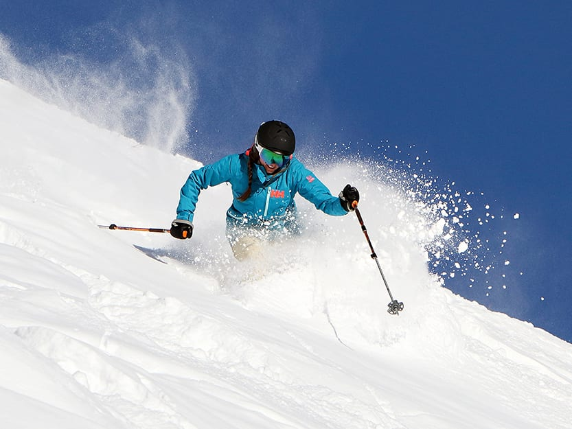
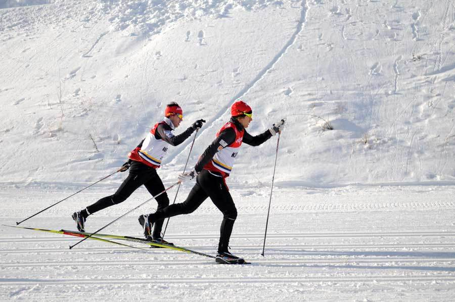

Snow skiing defines the use of skis to "glide" over Snow.
Skiing originated in Scandinavia, and has since grown to a world-wide pasttime.
There are 2 major types of skiing
Apline defines downhill skiing, while Nordic skiing defines "cross-country" skiing.
 